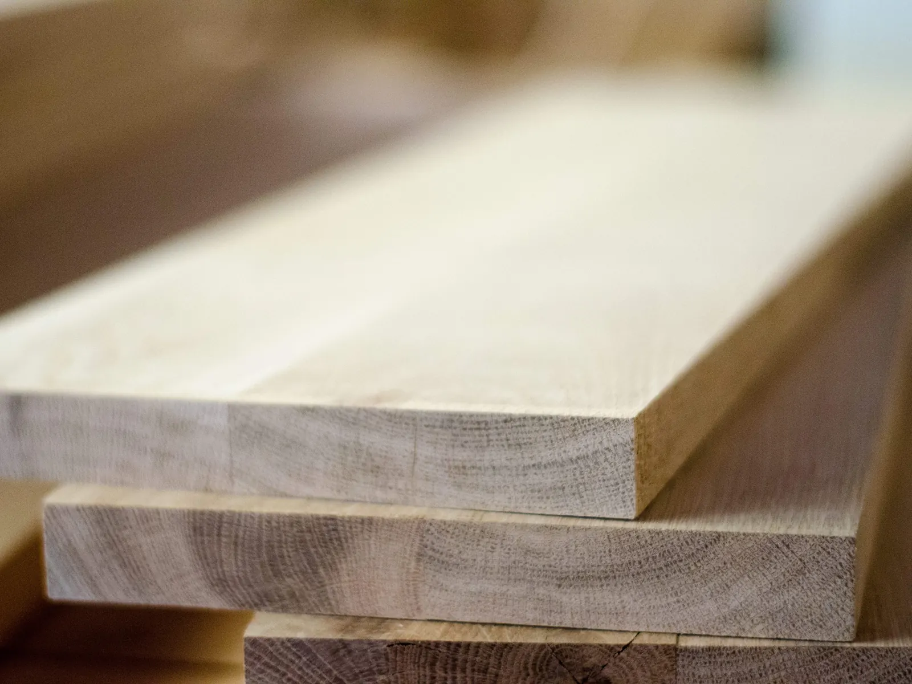
Sušené stolárske rezivo
Hranené dosky v stolárskej kvalite – dub, buk, jaseň, orech a ďalšie podľa aktuálnej ponuky. Rozmery pripravíme na mieru, či už ide o nábytok, terasy alebo obklady.
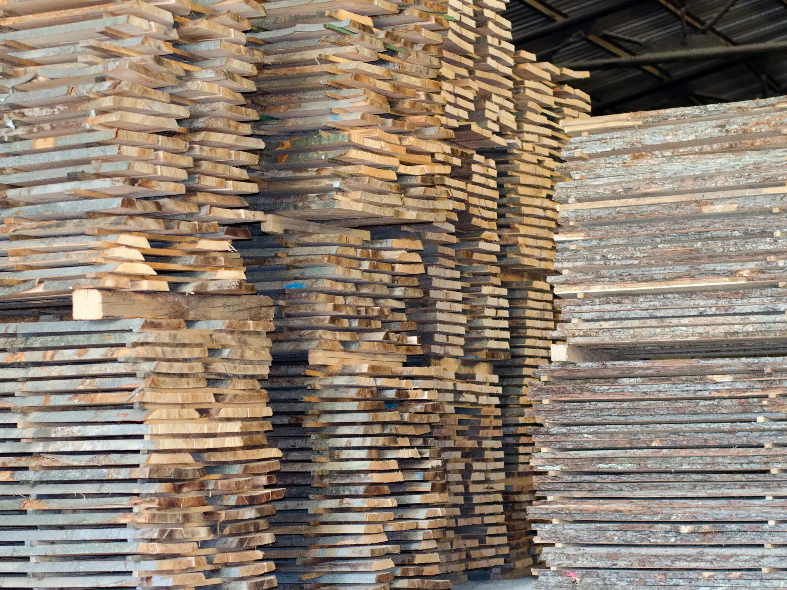
Málinec · Banskobystrický kraj
Tvrdé drevo od guľatiny po hotový výrobok. Sušené stolárske rezivo, hranoly, šindľový obklad a palivové brikety z vlastnej výroby.
O firme
Mlat s.r.o. sa špecializuje na spracovanie tvrdého dreva – dubu, buka, jaseňa, orecha a ďalších drevín podľa aktuálnej ponuky. Ponúkame dubové, bukové, jaseňové a orechové rezivo, dosky a hranoly. Guľatinu spracúvame vo vlastnej prevádzke v Málinci, od prvého rezu cez sušenie až po finálne opracovanie.
Drevný odpad z výroby využívame ďalej: z odrezkov vzniká škárovka, z pilín a drevného prachu palivové brikety bez spojív.
Za firmou stojí viac ako 20 rokov skúseností s výrobou z dreva – od výberu guľatiny po hotový výrobok. Tradičné remeslo dopĺňame modernými strojmi.
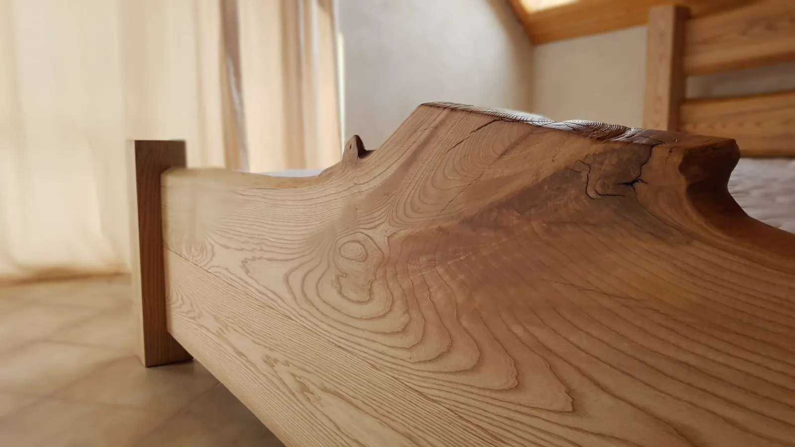
Produkty
Rozmer aj druh dreviny pripravíme podľa vašich požiadaviek. Aktuálnu ponuku a ceny vám radi pošleme na požiadanie.

Hranené dosky v stolárskej kvalite – dub, buk, jaseň, orech a ďalšie podľa aktuálnej ponuky. Rozmery pripravíme na mieru, či už ide o nábytok, terasy alebo obklady.
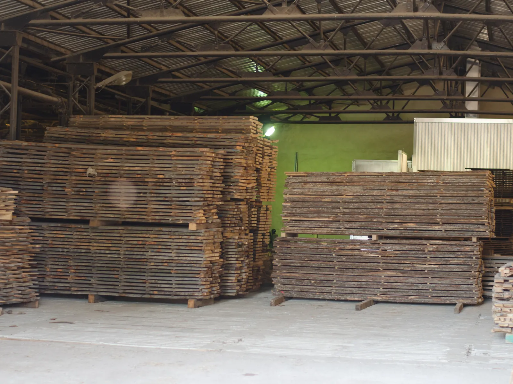
Dosky v hrúbkach a dĺžkach podľa vašich požiadaviek. Sušené, omietané aj neomietané.
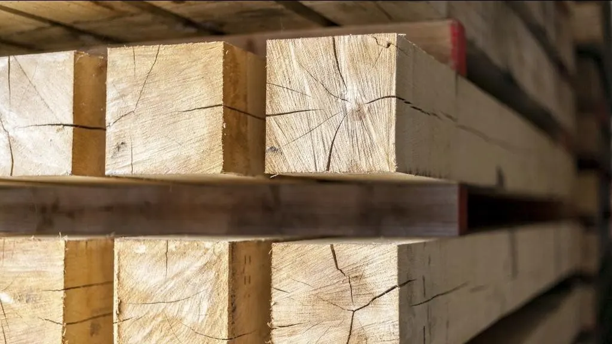
Čerstvé, nesušené hranoly skladom v dĺžkach 3, 4 a 5 m a rozmeroch 12×12, 15×15 a 15×12 cm. Iné rozmery na požiadanie.
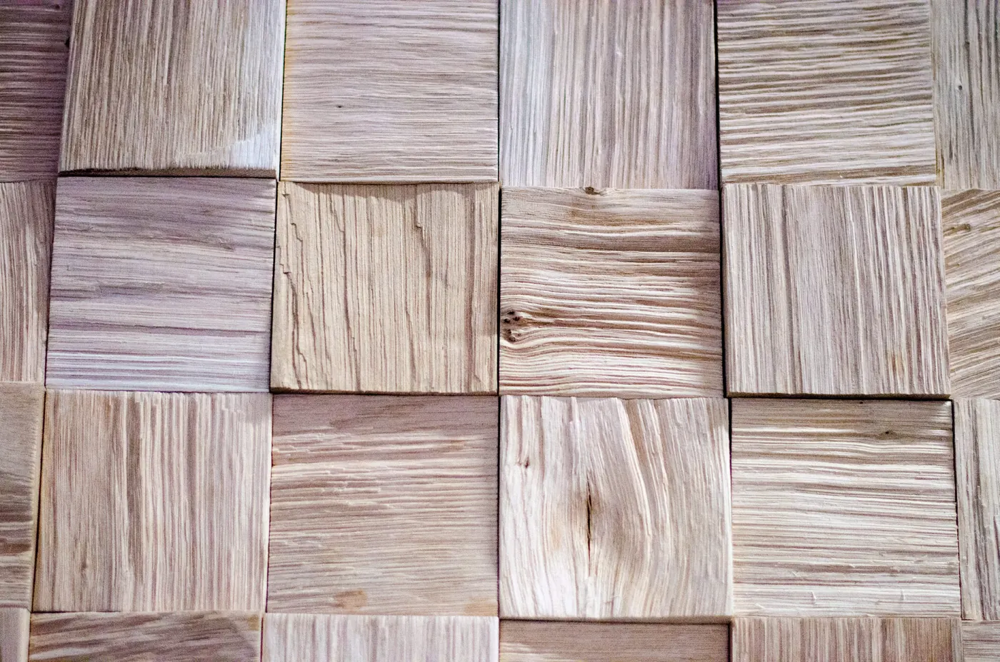
Drevené obklady z kartáčovaného dreva v rozmere 50×50 mm. Kartáčovanie zvýrazňuje prirodzenú štruktúru dreva.
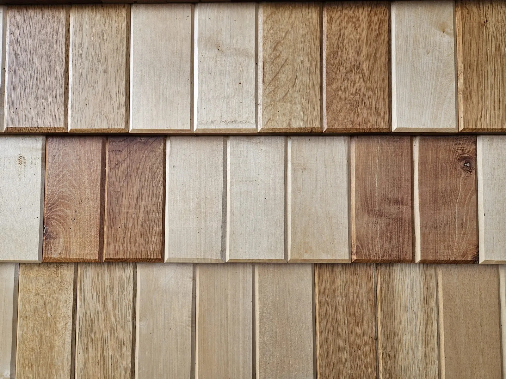
Šindľové tabličky z tvrdého dreva pre fasády aj interiéry. Medové odtiene, na želanie doplnené tmavšími tabličkami z agátu alebo čerešne.
Návod na montáž →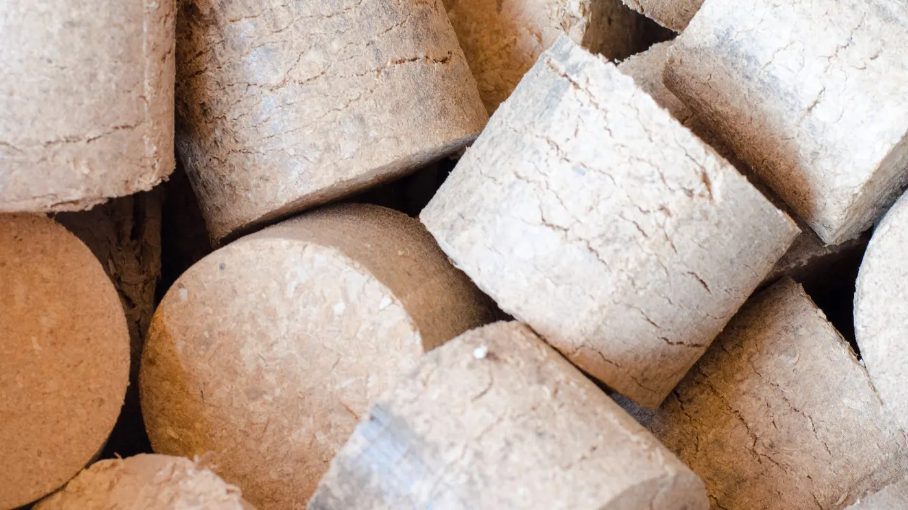
Vlastná výroba v Málinci. Lisované z pilín a drevného prachu z tvrdých drevín bez spojív, balené po 30 kg.
Výroba
Celý výrobný proces prebieha v našej prevádzke v Málinci. Prejdite si ho krok za krokom – ku väčšine krokov patrí video.
Guľatinu privážame a hneď pri vykladaní ju triedime podľa dĺžky.
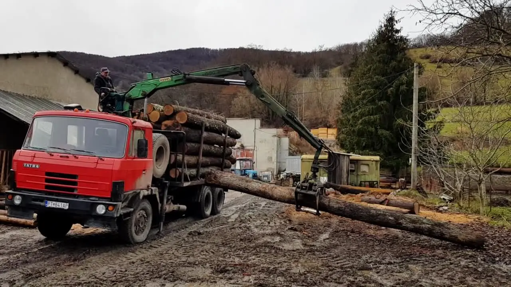
Guľatina sa nakladá na transportnú rampu, ktorá ju privádza k pásovej píle.
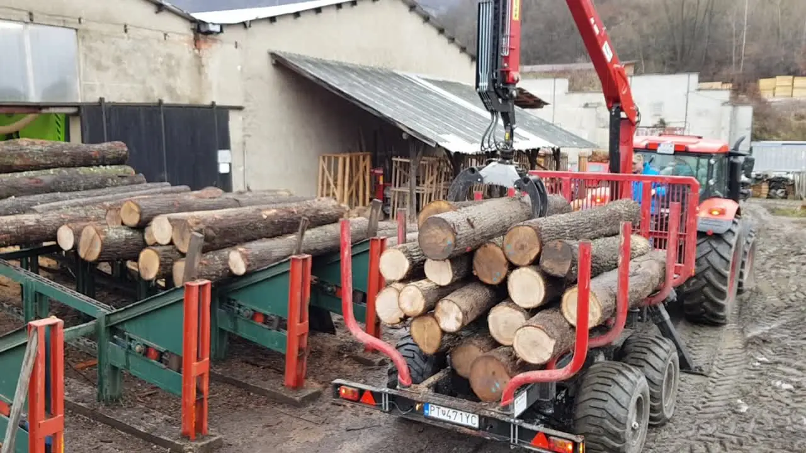
Horizontálna pásová píla MEBOR HTZ 1100 PRO
Rýchle a presné nastavenie pílového pásu. Píla delí guľatinu s priemerom až 1 000 mm. Pílu sme zakúpili s podporou fondov EÚ.
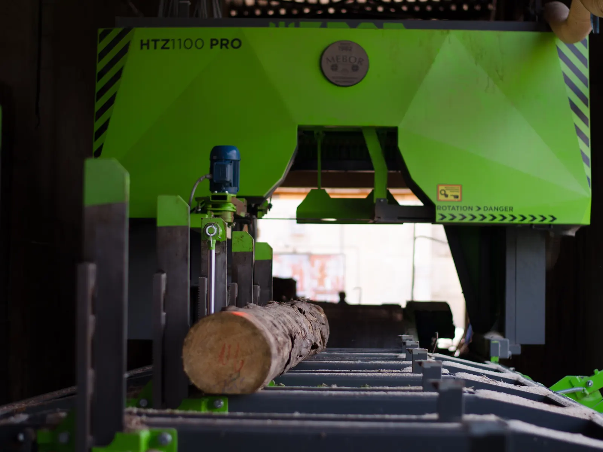
Čerstvo narezané prizmy odchádzajú priamo k zákazníkovi, alebo ich pripravíme na sušenie – podľa požiadaviek.
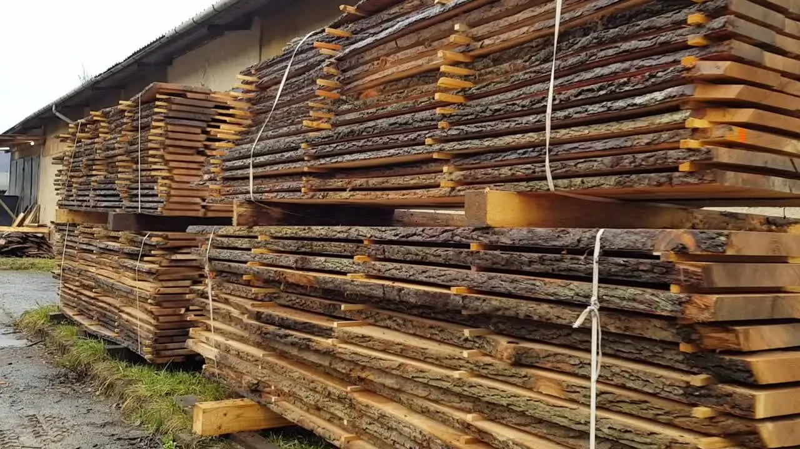
Nakladka sušiarne a sušenie dreva pri kontrolovanej teplote, vlhkosti a množstve pary.
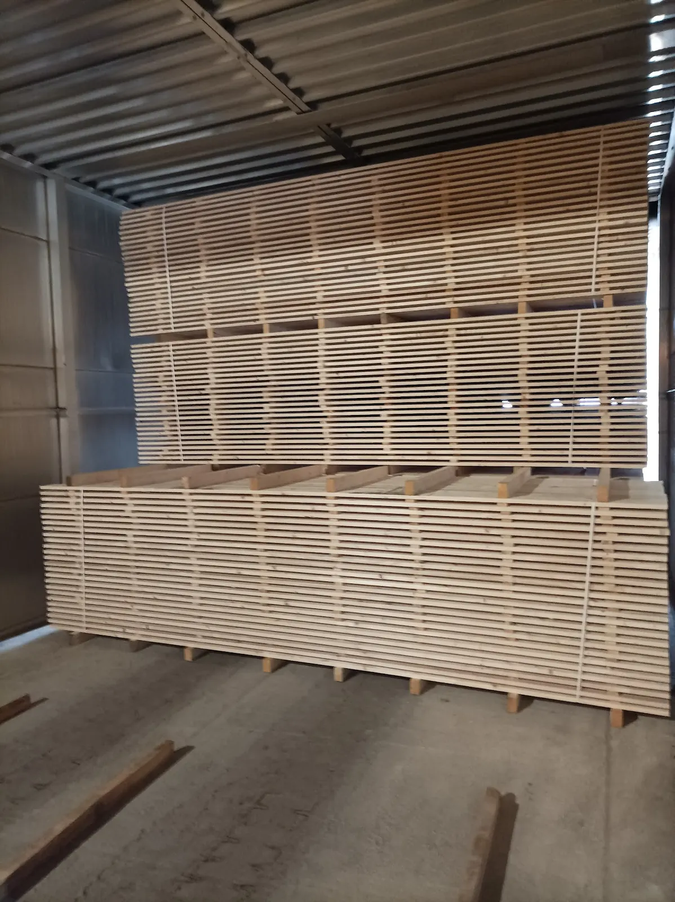
Rozmietacia píla Raimann WENIG ProfiRip 310 Opti
Univerzálna viaclistová rozmietacia píla na pozdĺžne delenie dreva.
Štvorstranná hobľovacia a profilovacia fréza GRIGGIO 240
Príprava hranolov a materiálu na škárovku.
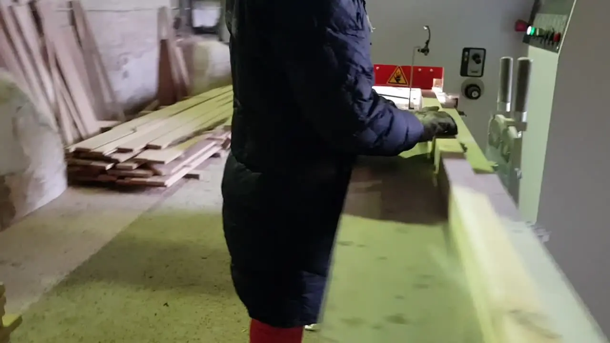
Briketovací lis Briklis 100
Z pilín a drevného prachu z výroby lisujeme palivové brikety bez spojív.
Realizácie
Ukážky domov obložených šindľovými tabličkami z našej výroby. Kliknutím fotografiu zväčšíte.
Ako nás nájdete
Prevádzku nájdete v obci Málinec na ulici Na štadióne. Hľadajte žltú halu s modrými bránami – parkovať môžete priamo pred ňou.
PrevádzkaMlat s.r.o., Na štadióne, 985 26 Málinec
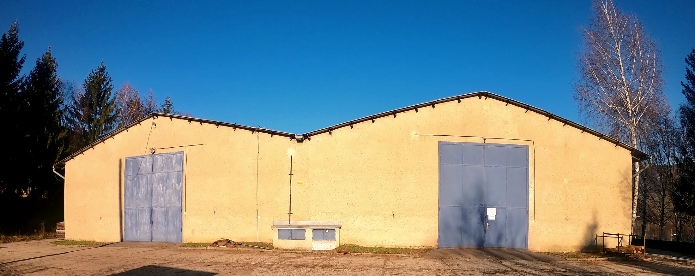
Kontakt
Radi vám pripravíme cenovú ponuku na rezivo, hranoly, šindeľ aj brikety.